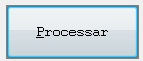

PUSH-BUTTON
Declara
botões de seleção.
texto
Texto a ser exibido no botão sendo
que o caractere "~" indica que o caractere seguinte
servirá de mnemônico de atalho.
bitmap
Nome de arquivo de figura no formato
bitmap para decorar o push button em substituição a
texto no modo gráfico.
linha
Linha de posicionamento do botão.
Coluna de posicionamento do botão na janela.
Largura do botão em colunas se obtido será assumido o suficiente para comportar texto.
Altura do botão em linhas. Se omitido será assumido
o valor 1.
código-de-retorno
Valor a
ser retornado no ESCAPE KEY quando o botão for
selecionado.
TAB-OFF
ou TAB-ON
Indica se o botão
deve ser considerado na navegação do
cursor.
SMALL
Indica
botão reduzido com a altura de meia linha no modo gráfico
e sem moldura no modo caractere.
nome-da-fonte
Nome de fonte instalada no Windows,
exemplos: "Arial", "Currier New" e
"Impact".
BOLD
Seleciona
negrito, Exemplo.
FIXED
Seleciona
formato fixo, Exemplo.
ITALIC
Seleciona
Itálico, Exemplo.
UNDERLINE
Seleciona
Sublinhado, Exemplo.
STRIKE-OUT
Seleciona
riscado, Exemplo.
largura-da-fonte
Largura
do caractere em pixels.
altura-da-fonte
Altura
do caractere em pixels.
Exemplo
EXEC COBOLware Object
PUSH-BUTTON
CAPTION "~Processar"
LINE 23
COLUMN 03
KEY 101
TAB-OFF
END-EXEC
ACCEPT
TELA-DADOS
ACCEPT tecla
FROM ESCAPE KEY
IF tecla
= 101
PERFORM PROCESSAR
END-IF
Efeito no modo gráfico
Efeito no modo texto
